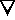
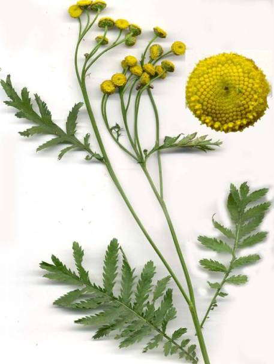
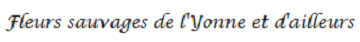

https://fleursauvageyonne.github.io/ |
|||||||||||||||||||
 et d'ailleurs  |
|||||||||||||||||||
|  Tanacetum vulgare L., 1753, Tanaisie, Herbe au coq, Sent-bon |
|||||||||||||||||||
|  | |||||||||||||||||||
| un petit herbier virtuel parmi d'autres pour découvrir, comme son nom l'indique, | |||||||||||||||||||
| les fleurs sauvages | |||||||||||||||||||
| présentées sous la forme de "fiches" et classées, dans leur famille, selon leur couleur approximative lorsqu'elles sont colorées Cliquer sur une couleur en zoomant si besoin | |||||||||||||||||||
| |||||||||||||||||||
| ou proposées sous différents angles parmi lesquels : | |||||||||||||||||||
| Végétaux toxiques | |||||||||||||||||||
| OrchidéesFleurs des champs... GraminéesCarex Plantes tinctorialesFleurs très discrètes Arbustes, arbrisseaux, etc. OrobanchaceaeEspèces protégées Végétaux aquatiquesVégétaux sans fleurs Noms latins et français |
|||||||||||||||||||
pour entrevoir également, si cela vous tente : | |||||||||||||||||||
| l'Yonne, un peu de latin botanique et quelques autres sujets divers et variés. | |||||||||||||||||||
| Bienvenue | |||||||||||||||||||
| Un herbier imaginé par Claude Richard Conception et maintenance informatiques : Annick Jani | |||||||||||||||||||
|
Mise à jour : JUILLET 2022 |